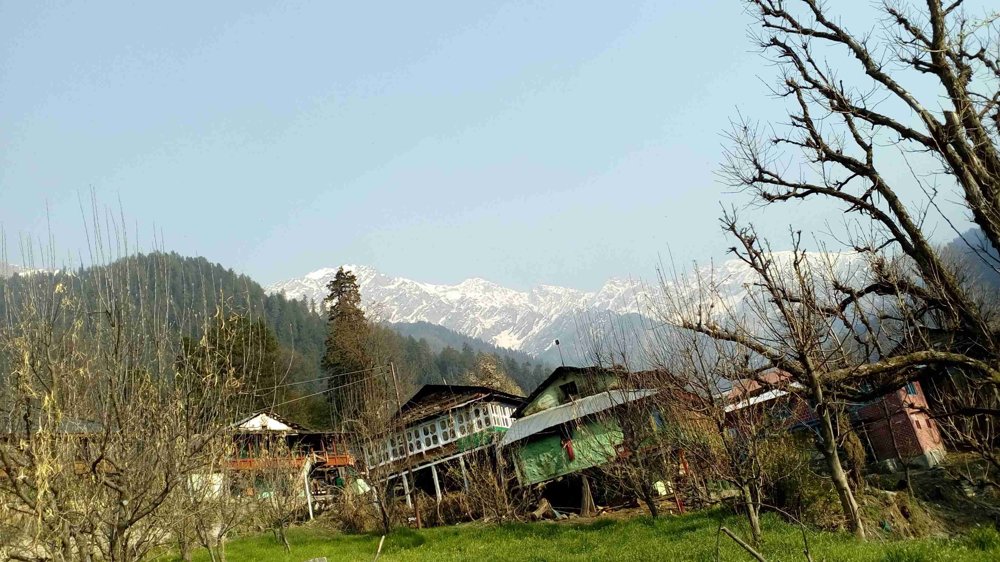

<div class="container-fluid">
  <div class="row" lazy-load-images>
    <div class="col-sm-1">
    </div>
    <div class="col-sm-7 ">
      <div class="card h-100" >
        <!-- Title -->
        <h1 class="mt-4">Grahan .. a hidden gem of Himachal Pradesh</h1>
        <!-- Author -->
        <p class="lead">
          by
          <a href="#">Ravi Singh</a>
        </p>
        <hr>
        <!-- Date/Time -->
        <p>Posted on April 5, 2018 at 12:00 PM</p>
        <hr>
        <!-- Preview Image -->
        
        <hr>

        <p class="lead"> How often do you get a chance to wake up to the chirping of birds and view of the giantic Himalayas ?
          Well , Let me take you to the Grahan , My last trekking destination to make that experience as feeling.
         </p>

        <p>"Life is not about the final moment but its about the journey we take to reach the destination". And I realized this when booked the bus ticket to Kullu from Delhi from March 30 ,2018</p>

        <p>The HRTC bus departed at 7:00PM from Kashmiri Gate Bus Terminal adn that is when our jouyney to Grahan Village also began. The bus passed through major cities like Sonipat , Panipat ,Kurusheshtra and
        Karnal. After 13hours long journey we finally reached Bhuntar. From Bhuntar , we catched a local bus to Kasol at early in the morning at 6:30AM . Even though it was morning , but Bus was full packed with passengers.</p>

        <blockquote class="blockquote">
          
          <footer class="blockquote-footer">Bhuntar
          </footer>
        </blockquote>

        <p>We reached Kasol at 8:00PM. After getting fresh finally we fed ourself with maggi and some chocolates. And then our trek to Grahan village started.
        In front of us, there was a dense forest and above a giant rocky mountain. I felt like they were waiting for us to show their splendid beauty.
        </p>

        <p>
          The trails were full of twist and turns . Sometimes it pases through the rocky hills where putting your foot on the right place itself was a big challenge and sometimes it passes
          along the tributires of Paravati river. The sound of the water in forest and hills was not less then anu musical concert. We fed lot of splendid views of majestic Himalayas to our eyes. We reached
          Grahan around 2:30 PM.
        </p>
        <p>
          First thing we did is we booked a home stay and given rest to our body. After two hours , we realize the place where we took rest was very different. There is no electricity in day time.
          and building were completely constructed with wood. They don't even had ceiling fan. We totally disconnected from the rest of world because there is not internet , mobile network and even electricity.
          The temprature changed dramatically at night. We felt like we entered in the month of december just after March. We stayed there for two days and witnessed the life of local people, the struggle they do for everything.
        </p>
        <p>
          Trek to Grahan was truly a special journey. I took back lot of stories and beautiful memory of lovely people of Grahan.
        </p>

        <hr>


        <ul class="nav nav-mytabs" id="myTab" role="tablist">

          <li class="nav-item">
            <a class="nav-link" id="history-tab" data-toggle="tab" href="#history" role="tab" aria-controls="history"
               aria-selected="false">Best time to Visit</a>
          </li>
          <li class="nav-item">
            <a class="nav-link" id="itenary-tab" data-toggle="tab" href="#itenary" role="tab" aria-controls="history"
               aria-selected="false">Itenary</a>
          </li>
          <li class="nav-item">
            <a class="nav-link" id="how-to-reach-tab" data-toggle="tab" href="#howToReachTab" role="tab"
               aria-controls="city-attractions" aria-selected="false">How To Reach</a>
          </li>
          <li class="nav-item">
            <a class="nav-link" id="video-tab" data-toggle="tab" href="#videoTab" role="tab"
               aria-controls="city-attractions" aria-selected="false">Video</a>
          </li>
        </ul>
        <div class="tab-content mytab-content" id="myTabContent">
          <div class="tab-pane fade show active" id="history" role="tabpanel" aria-labelledby="history-tab">
            <blockquote>
              Best time to Visit :
              Weather of kasol is pleasant through out the year except December end.
            </blockquote>
          </div>
          <div class="tab-pane fade" id="itenary" role="tabpanel" aria-labelledby="itenary-tab">
            <blockquote>
              My itinerary was as follow :-
              <br><br>
              Day1 : Evening Bus @7:00 PM from Kashmiri Gate to Kullu.
              <br><br>
              Day 2: Get down at Bhuntar. Take Bus or Taxi from Bhuntar to Kasol. Prefer Local bus. Its fare will be just 50
              rs if you are budget traveller. Have Breakfast at kasol and start your trek as early as possible. Reached
              Grahan by 2 or 3. Guest house are easily available. Take some rest and roam in village.
              You can have your dinner at Old Kishna Gues house but Mount view owner prepared nice parantha.
              <br><br>
              Day 3 : Start around 8:30 or 9:00 AM for Waterfall. Enjoy the scenic view of majestic himalaya.
              <br><br>
              Day4 : Start early morning to kasol. Take shortest way to reach kasol. From Kasol you can go to manikaran or
              back to Bhuntar or Kullu to catch your bus.
              <br><br>
            </blockquote>
          </div>
          <div class="tab-pane fade" id="howToReachTab" role="tabpanel" aria-labelledby="how-to-reach-tab">
            <blockquote>
              Book Bus ticket  :
              <a href=" http://online.hrtchp.com/oprs-web/" target="_top"> http://online.hrtchp.com/oprs-web/</a>
              <br><br>
              I  have visited parashar lake also , i can say grahan trek is far better than the parashar lake trek.
              If someone ask what is the thing in Grahana-- I can say.. its "Piece".
            </blockquote>
          </div>
          <div class="tab-pane fade" id="videoTab" role="tabpanel" aria-labelledby="video-tab">
            <div class="embed-responsive embed-responsive-16by9">
              <iframe width="560" height="315" src="https://www.youtube.com/embed/GZpr2t_Y7Fk"
                      frameborder="0" allowfullscreen></iframe>
            </div>
          </div>
      </div>
        <!-- Comments Form -->
        <div class="card my-4">
          <h5 class="card-header">Leave a Comment:</h5>
          <div class="card-body">
            <form>
              <div class="form-group">
                <textarea class="form-control" rows="3"></textarea>
              </div>
              <button type="submit" class="btn btn-primary">Submit</button>
            </form>
          </div>
        </div>

        <!-- Single Comment -->
        <div class="media mb-4">
          
          <div class="media-body">
            <h5 class="mt-0">RSAMBORA</h5>
            Done my friend
          </div>
        </div>
        <!-- Comment with nested comments -->
        <div class="media mb-4">
          
          <div class="media-body">
            <h5 class="mt-0">
              Sanjay Desai
            </h5>
            Hi Ravi, Super presentation - info + aesthetics! Me & my wife are planning to visit Grahan & would stay for 12 days there. Could you be kind enough to provide name & number of the guest house where you stayed. Is it safe?
            <div class="media mt-4">
              
              <div class="media-body">
                <h5 class="mt-0">Ravi Singh</h5>
                thanks Sanjay.. ur words made my trip really worth..
                yes Grahan is safe ..you can go there without any second thought... villagers are very helpful...
                although we stayed there @Mount view guest house.. but right away I  don't hv owner number...
                there are number of guest house available there.. one of   ( Ghanshyam Place : 01902-20928, 9816572793) u can try .
              </div>
            </div>
          </div>
        </div>
      </div>
    </div>
    <div class="col-sm-3">
      <app-about-us></app-about-us>
      <div class="card">
        <h3>Other Treks Article</h3>
        <div class="fakeimg">Bhramtal , Uttrakhand</div><br>
        <div class="fakeimg">Image</div><br>
      </div>

    </div>
    <div class="col-sm-1">
    </div>
  </div>
</div>

